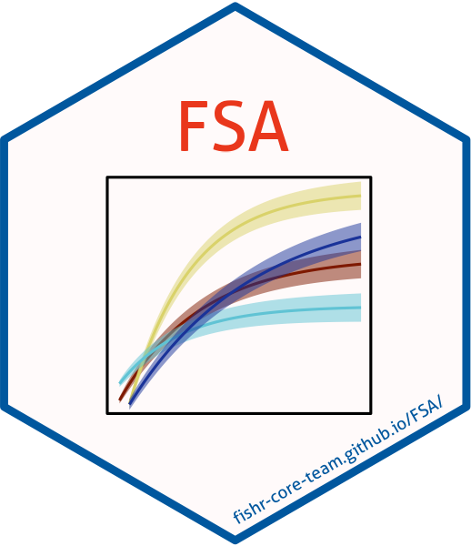

FSA (Fisheries Stock Assessment) 
The FSA package provides R functions to conduct typical introductory fisheries analyses. Example analyses that use FSA can be found in the Introductory Fisheries Analyses with R book and on the Examples page of the fishR website. You can browse documentation for functions in FSA under the References tab and recent changes under the News tab at the top of this page. Please cite FSA if you use it in a publication (and send me a note).
Installation
The most recent stable version (on CRAN) of FSA may be installed with
The most recent development version (on GitHub) may be installed with
if (!require('devtools')) install.packages('devtools'); require('devtools')
devtools::install_github('droglenc/FSA')You may need to have R Tools installed on your system to install the development version from GitHub. See the instructions for (R Tools for Windows or R Tools for Mac OS X).
Questions / Comments / Problems
Report questions, comments, or bug reports on the issues page.